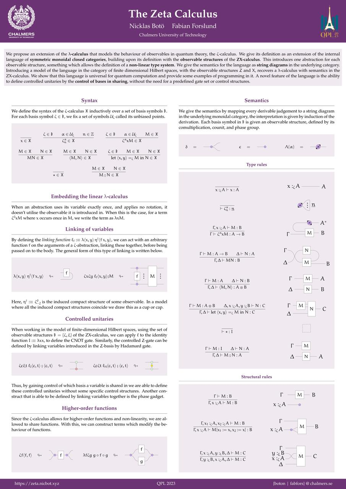
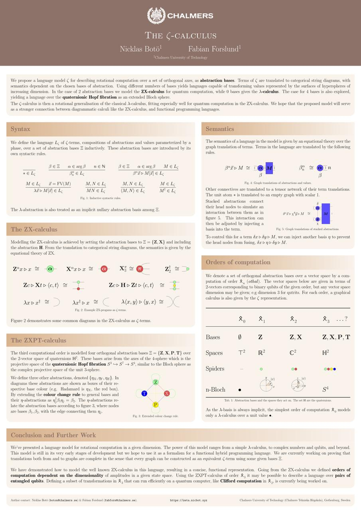

Master's thesis
We have been asked to share our thesis work somewhere, and it is probably easiest to put it here.
We have been asked to share our thesis work somewhere, and it is probably easiest to put it here.
We presented a poster on Zeta at Quantum Physics and Logic 2023 at Institut Henri Poincaré! The PDF of the poster can be found here.
Our poster submission for the Programming Languages for Quantum Computation (PLanQC) got accepted! The workshop is hosted at the International Conference on Functional Programming (ICFP) in Ljubljana, Slovenia. The poster features a general overview of the \(\zeta\)-calculus with examples in the ZX-calculus and higher orders of computation.
